晴空观测站 · 第三轮验收
此文件汇集真实浏览器截图与原创素材，便于离线查看；它不是交互产品页面。截图使用明确标注的临时合成课程，不代表正式星海远航教学内容。真实页面和组件预览的启动方式见交付说明。
1440×900 · 默认首屏

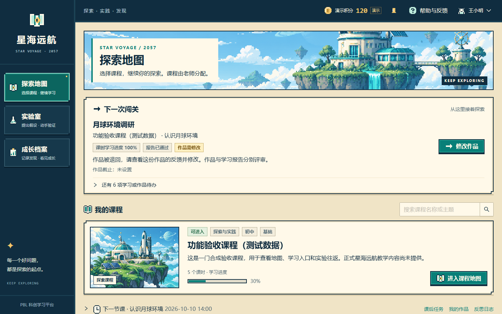

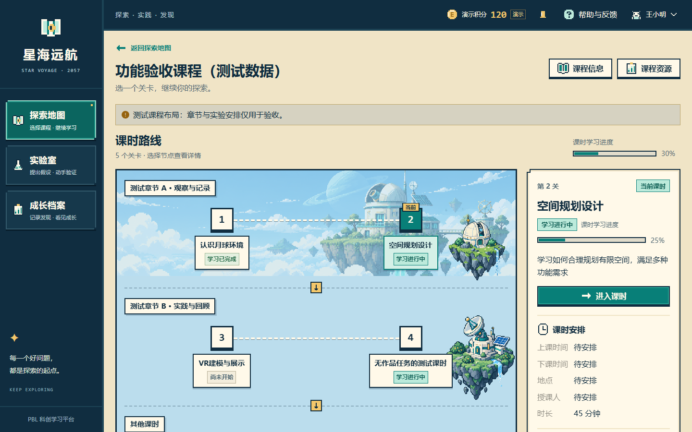
查看完整地图、选中课时安排与伙伴长图 · 桌面通知浮层 · 窄屏通知浮层


768×1024 · 默认首屏

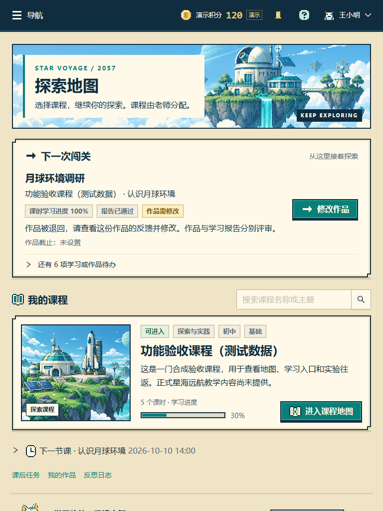

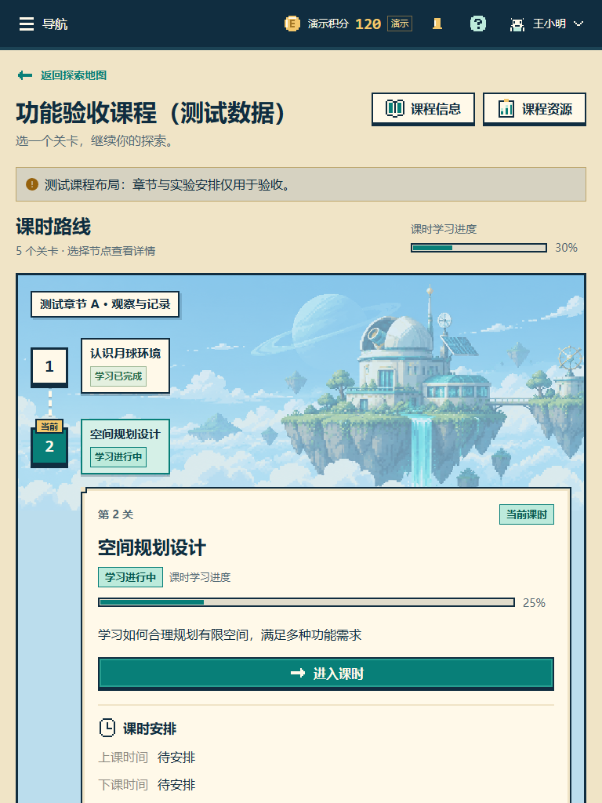
390×844 · 默认首屏

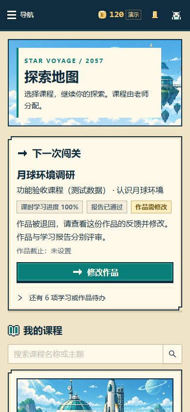

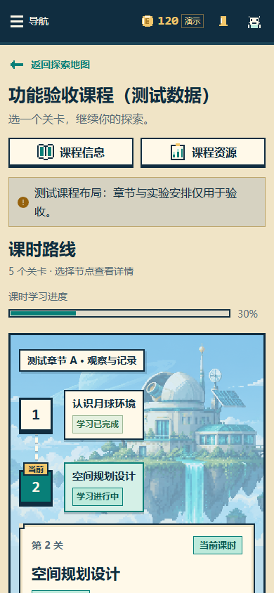


原创素材母版
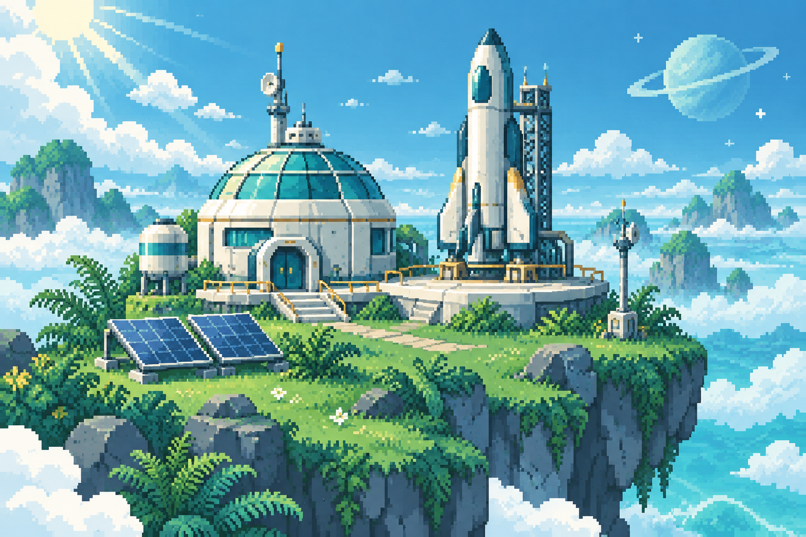
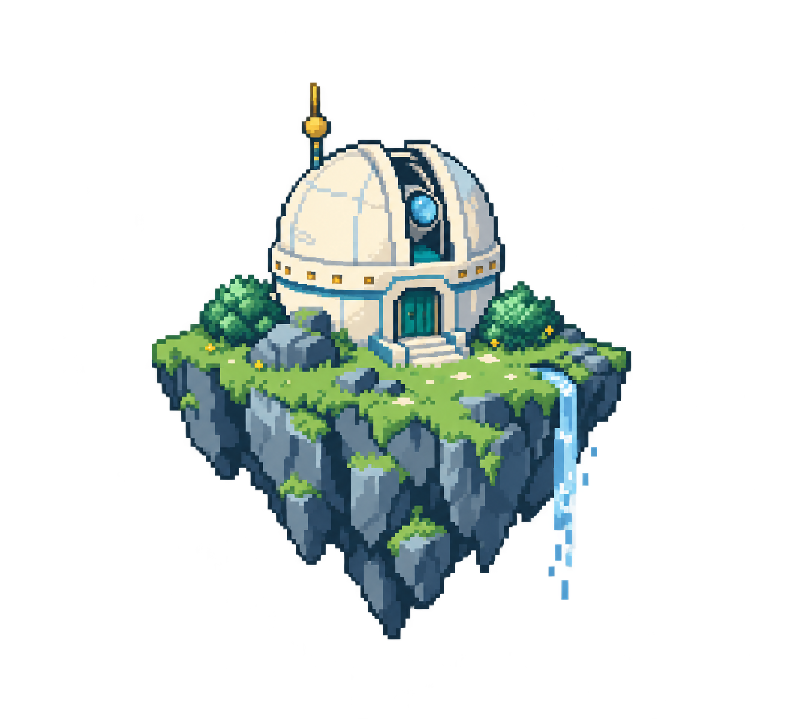
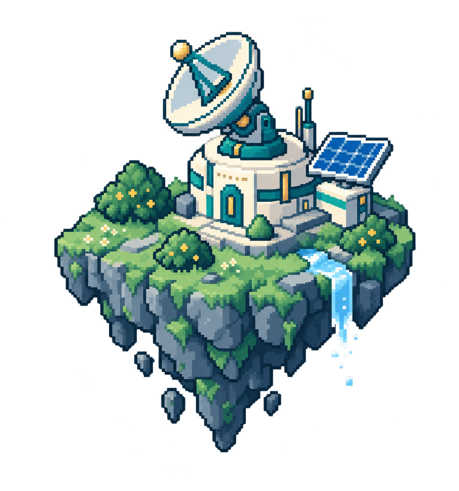
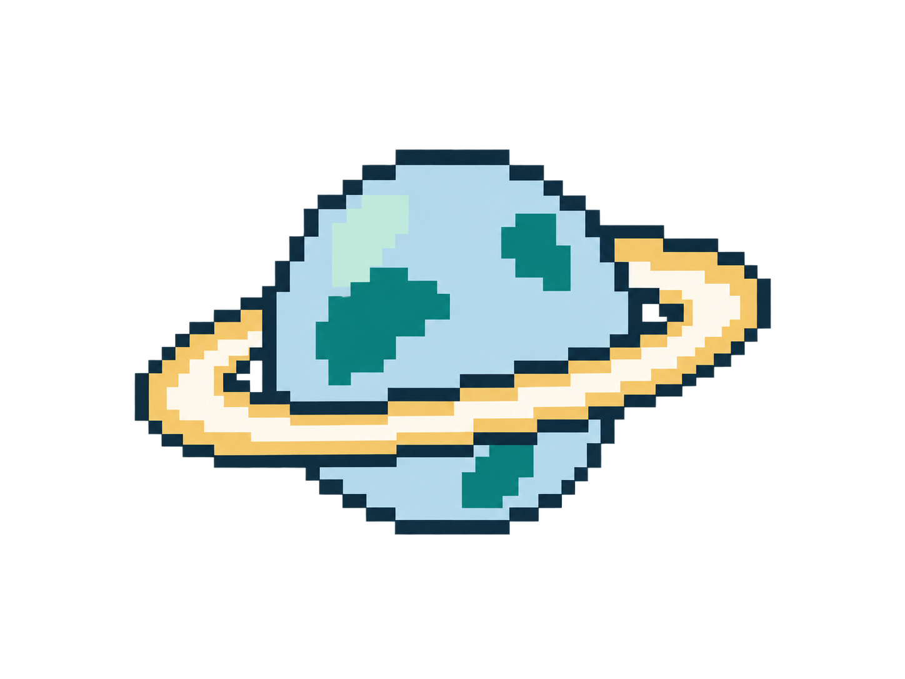
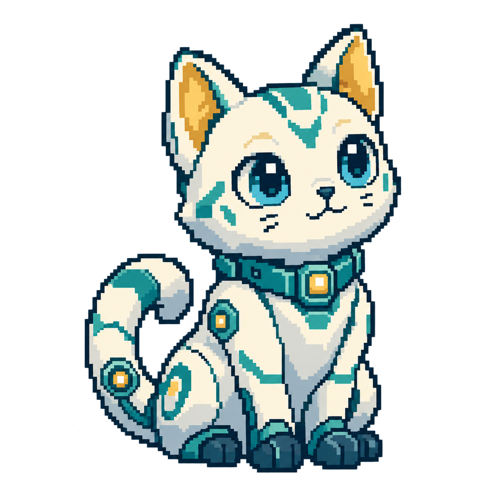